Laboratorio Clínico
Nuestro laboratorio clínico ofrece análisis médicos completos con resultados oportunos, apoyando tu diagnóstico y seguimiento de salud con tecnología moderna y personal capacitado.
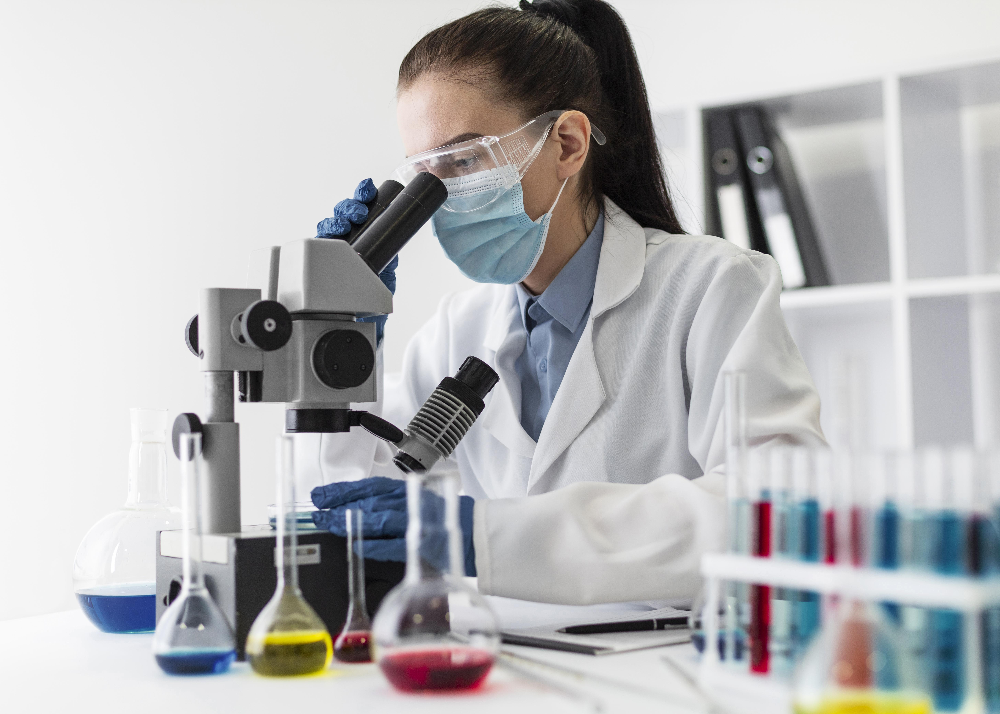
Servicios incluidos
Perfiles bioquímicos completos y pruebas de sangre.
Exámenes de orina, heces y marcadores tumorales.
Pruebas hormonales y estudios especializados.
Entrega rápida de resultados y reportes claros.
Atención al paciente
Atendemos de lunes a sábado con recepción de muestras en nuestras sedes de Popayán y Santander de Quilichao. Puedes solicitar tus resultados en formato digital o impreso.

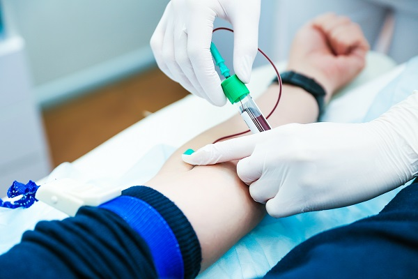
Glucosa, perfil lipídico, hormonas, transaminasas y más.
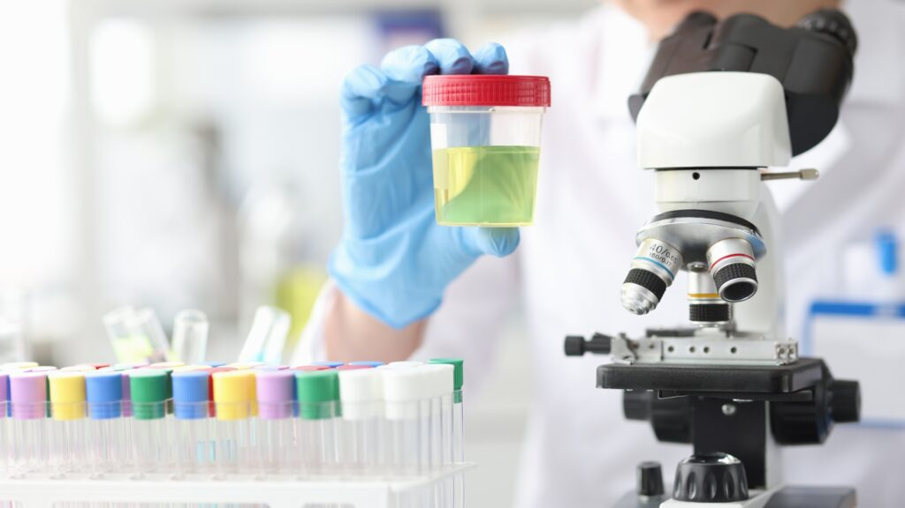
Urocultivo, parcial de orina, proteinuria y creatinina.
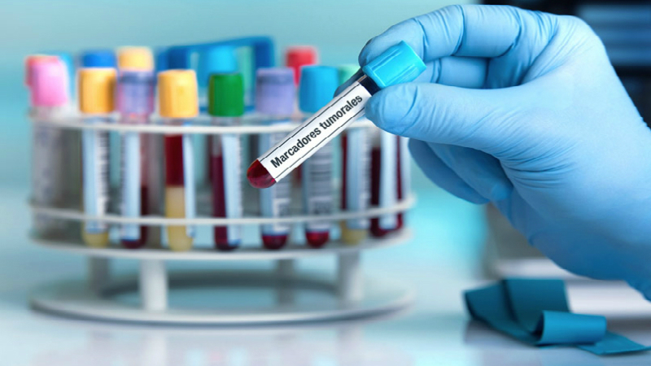
Marcadores tumorales, estudios hormonales y más.
Recomendaciones
Sigue estas indicaciones para obtener resultados más precisos.
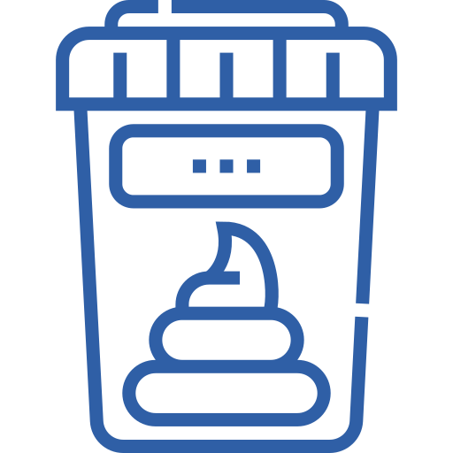
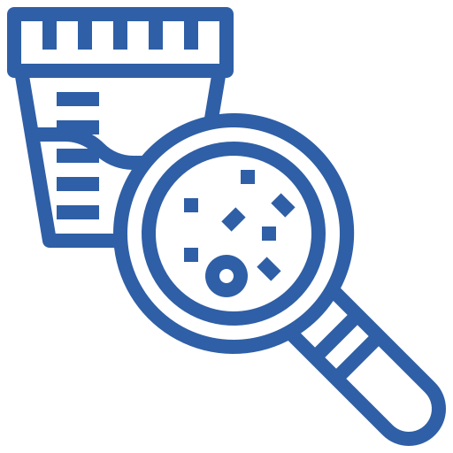
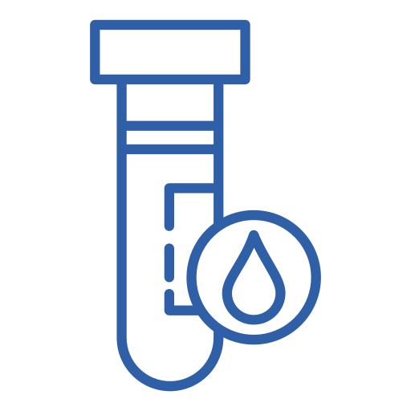
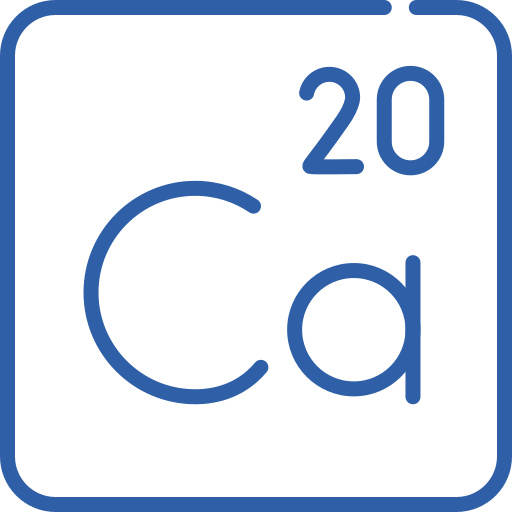
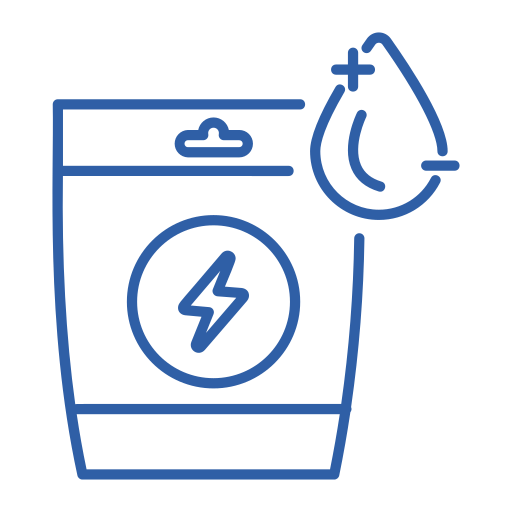
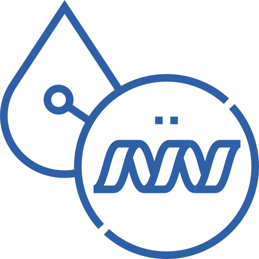
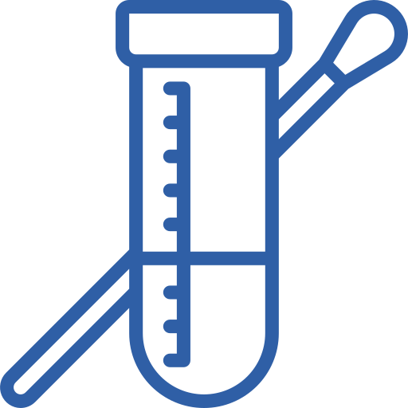
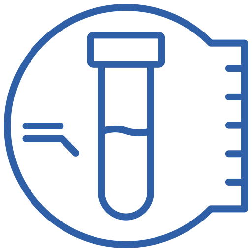
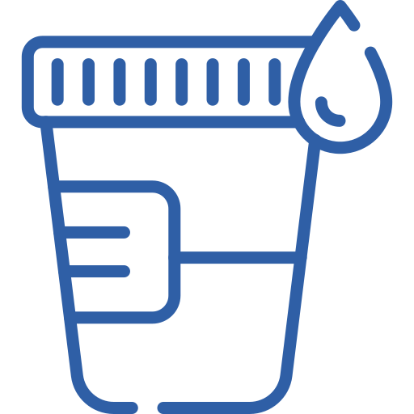
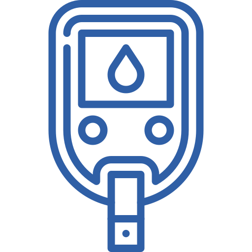
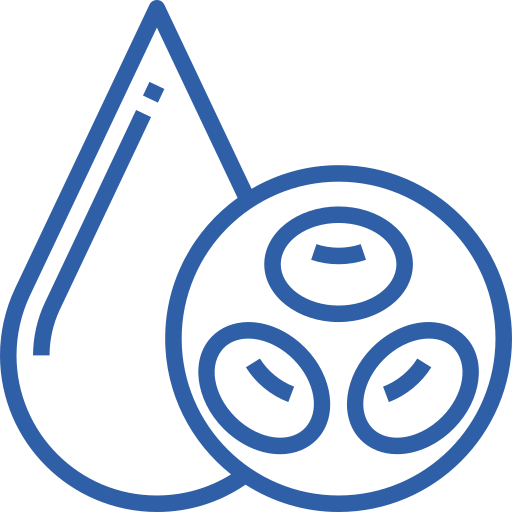
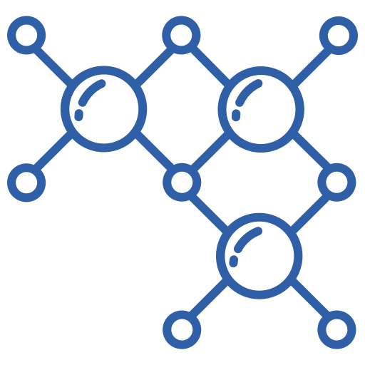
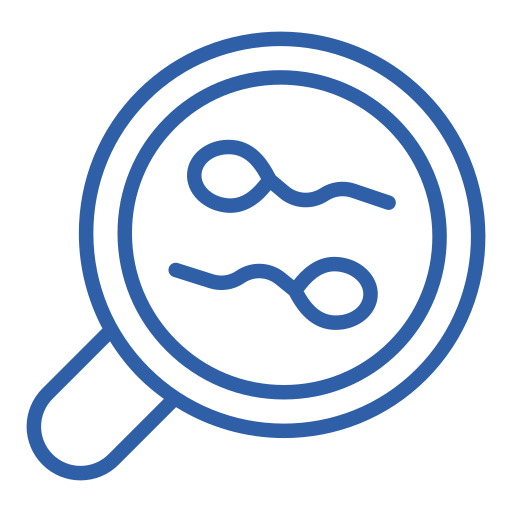
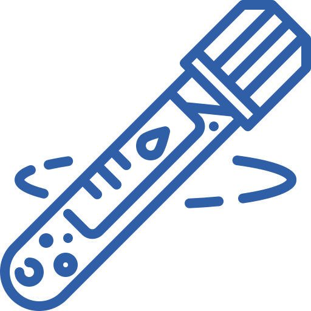
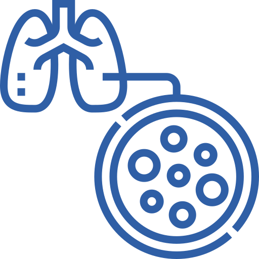